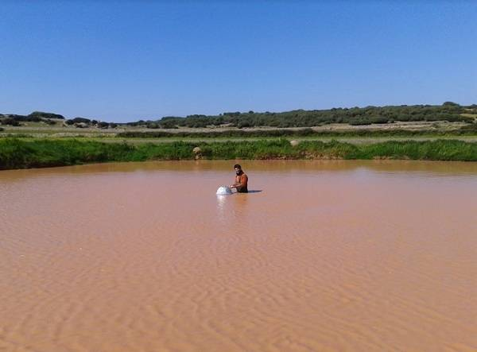
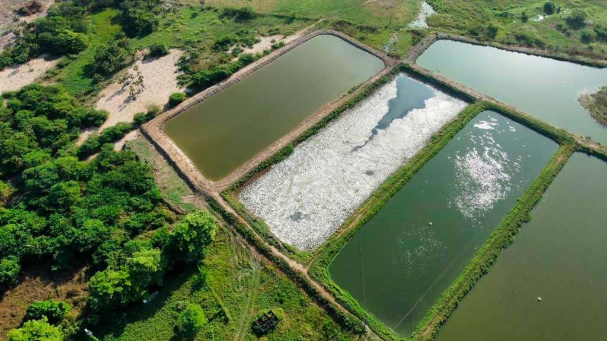
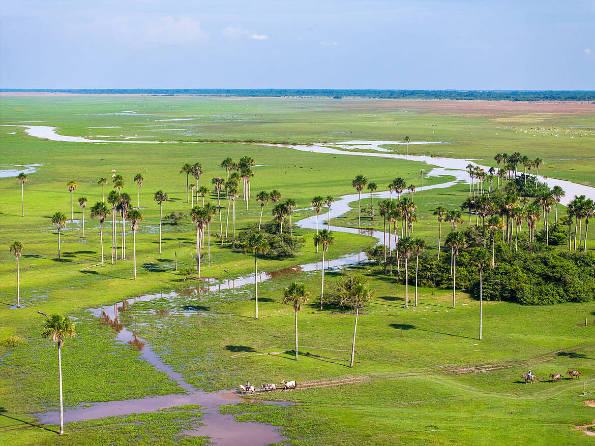
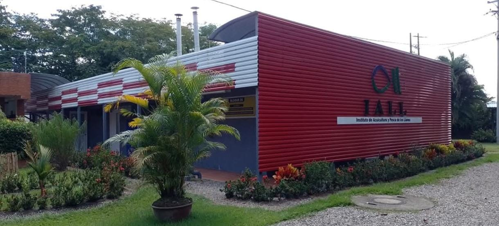
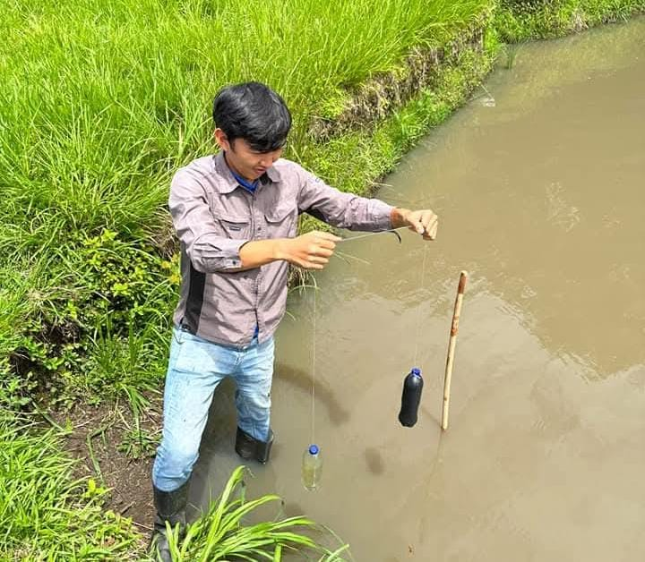
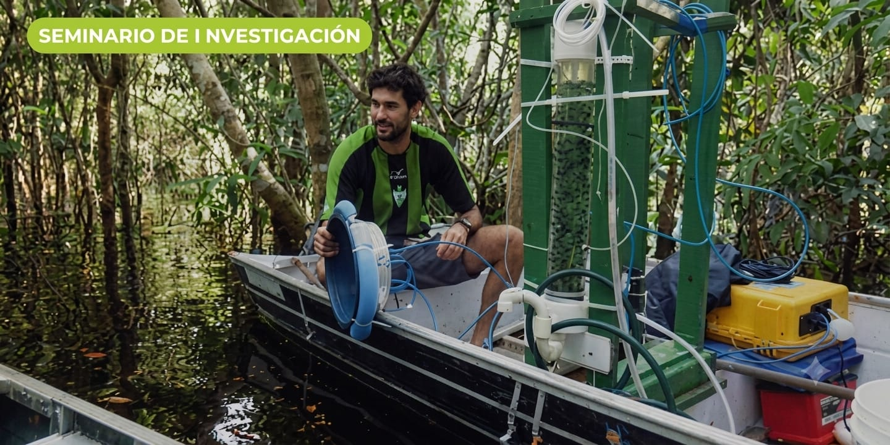
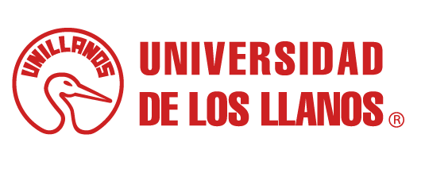

Los estanques de tierra son considerados como fuentes de gases de efecto invernadero.
El alimento no consumido, la producción primaria y las heces se acumulan en el sedimento del estanque y allí se descomponen — liberando CO₂ y CH₄ al ambiente.
Con oxígeno, esa descomposición libera principalmente CO₂; sin oxígeno, domina la metanogénesis y se libera CH₄ — un gas con un potencial de calentamiento 27 veces mayor que el CO₂. A nivel global, los estanques de tierra son responsables de más del 80% de las emisiones de GEI del sector acuícola, pero existe un vacio de información propia sobre estas emisiones en la orinoquia colombiana.
- Cuantificar emisiones de CO₂ y CH₄ asociados a la produccion de cachama (Piaractus orinoquensis) en estanques pscicolas de tierra de la universidad de los llanos.
- Medir las concentraciones de dióxido de carbono (CO₂) y metano (CH₄) en los estanques piscícolas de tierra durante el ciclo productivo de la cachama (Piaractus brachypomus), y analizar su variación en función de las etapas de crecimiento del cultivo.
- Caracterizar las condiciones fisicoquímicas (pH,T,OD) del agua en los pozos cachameros de la Universidad de los Llanos para determinar su influencia en los procesos asociados a la generación y liberación de gases de efecto invernadero.
- Proponer estrategias de manejo sostenible orientadas a la reducción de emisiones de gases de efecto invernadero en la producción de cachama.
Los números del muestreo hablan por sí solos
Muestras analizadas hasta la fecha, desde el inicio del monitoreo.
Estanques de tierra monitoreados de forma continua.
Fases de muestreo en cada visita de campo.







Variables analizadas en cada muestra
Equipo de investigación

- Valentina Wilches Ávila valentina.wilches@unillanos.edu.co
- Yudy Alejandra Solano López yudy.solano@unillanos.edu.co
- Diego David Pardo Buitrago
- João Henrique Fernandes Amaral
Sede Barcelona Villavicencio
Dirección: Km. 12 Vía Puerto López, Vereda Barcelona, Villavicencio (Meta) Celular: 300 000 00-01 - 300 000 00-02